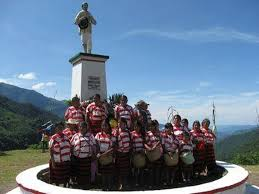

|
|
| Historia Curiosidades Contacto Ubicación Galeria |  |
La comunidad Yucunino, ubicada en el municipio de Santiago Nuyoó, Oaxaca, México, tiene un origen complejo ligado a migraciones y conflictos territoriales.;Los habitantes de Yucunino, así como la cabecera municipal, han tenido una historia de conflicto con Santa María Yucihíti, con la población de Nuuyoo, originalmente de Mixtepec, habiéndose desplazado a la tierra de Yucuhiti por circunstancias de guerra.; En la lucha por la tierra, se dice que los habitantes de Nuuyoo, en su dialecto mixteco, pidieron permiso a las autoridades de Yucuhiti para quedarse un mes (yoo).;No se fueron, se quedaron y tomaron las tierras, aprovechando que Yucuhiti no tenía suficiente población ni experiencia para defenderlas, así se establecieron y desarrollaron; La historia de Yucunino también se encuentra entrelazada con la de Santiago Nuyoó, donde se han encontrado vestigios de un pasado de conquista y culto a la luna.;La población de Santiago Nuyoó, antes de ser conquistada por guerreros enviados por el rey Mixteco de Zacatepec, era habitada por personas que adoraban a la luna.; En resumen, el origen de la comunidad Yucunino está ligado a un movimiento de población, a conflictos territoriales, y a la historia de Santiago Nuyoó, donde la población yucunina se estableció luego de una larga lucha por la tierra y la conquista por parte de los mixtecos.; |